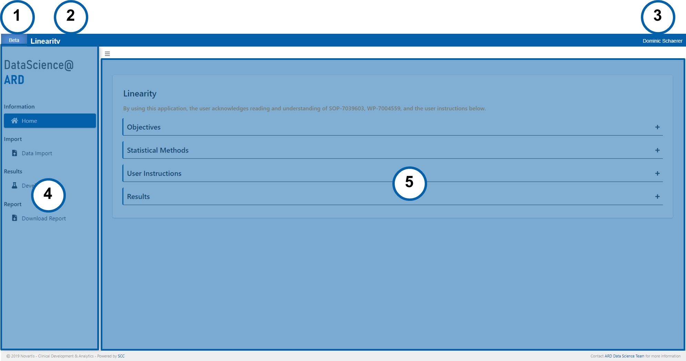
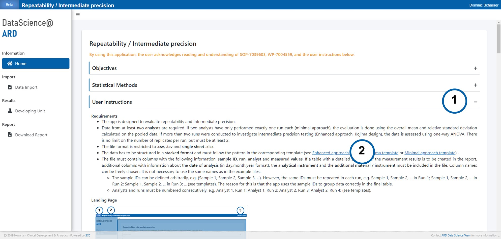
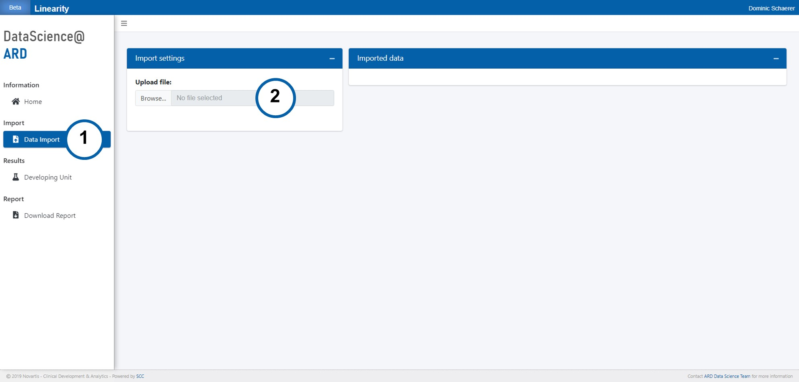
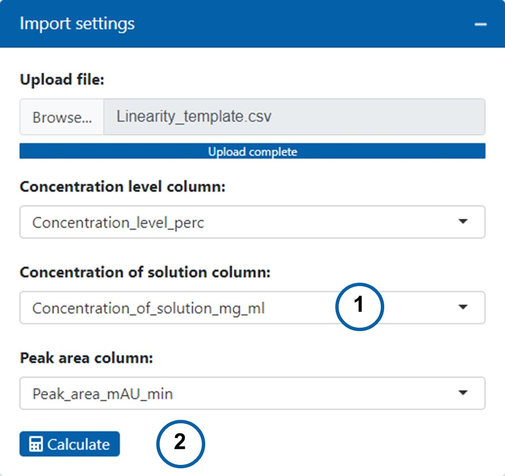
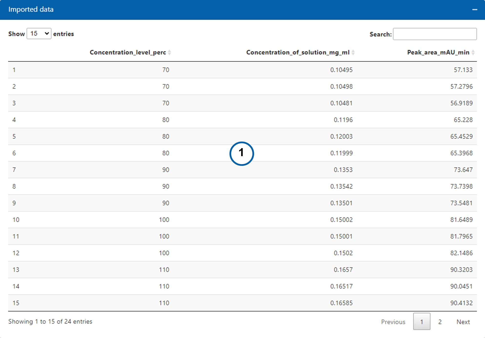
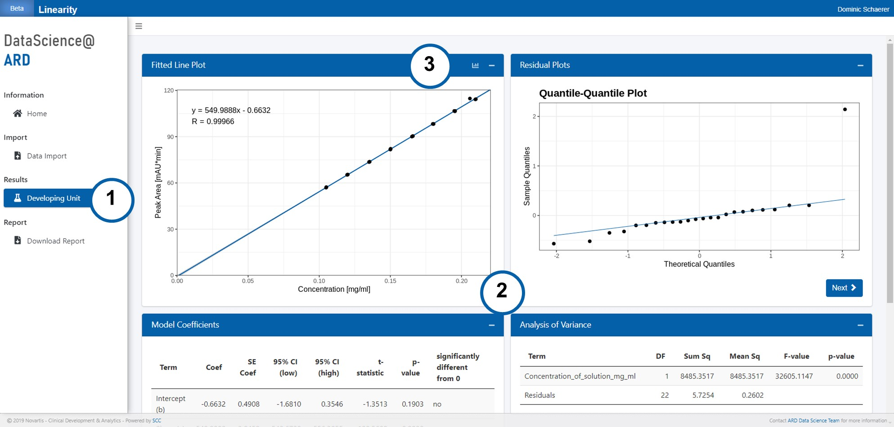
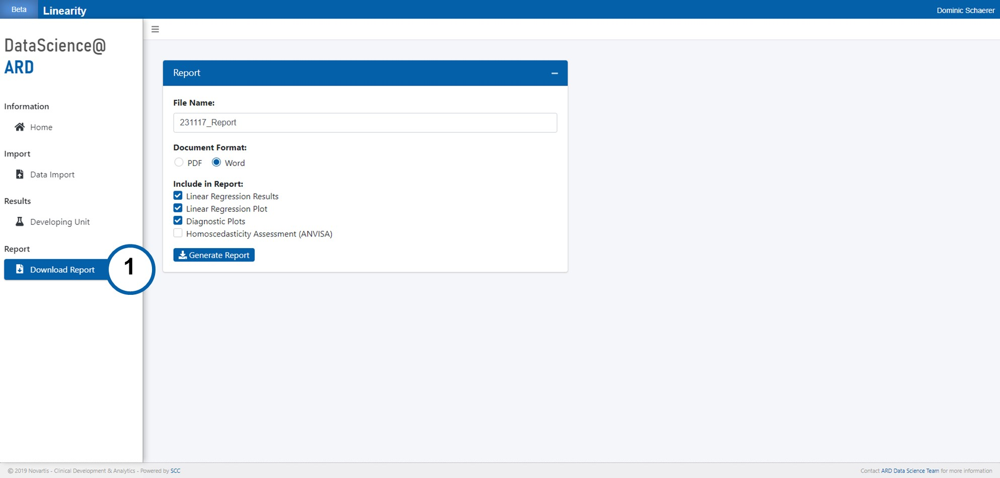

Requirements
- The file format is restricted to .csv, .tsv and
single sheet .xlsx.
- The data has to be structured in a stacked format (see
template).
- The file must contain columns with the following information:
analyte concentration levels, analyte concentrations and
analyte responses. Column names can be freely chosen. It is not necessary
to use the same names as in the example file.
Landing Page

- Version number
- App name
- Username
- Sidebar
- Main panel
Template Download

- Click on plus to open “User Instructions” section.
- Download a template file from the links and replace data with your own.
Data Import

- Click “Data Import” in the sidebar.
- Upload your data file in the “Import settings” box.
Import Details

- Select columns that contain corresponding data.
- Press the "Calculate" button to confirm your entries and start the
calculations.
Imported Data Review

- Review the data in tabular form.
Results

- Click “Developing Unit” in the sidebar.
- Review results of linear regression.
- Click bar chart icon to customize fitted line plot.

- Enter title. The title is displayed above the "Fitted Line Plot", as a
title in the "Data Used for Linearity Assessment" table and in the left
corner of the report header. If left blank, "Linearity Report" is displayed
in the report header.
- Enter x-axis label. X-axis label is displayed in the "Fitted Line Plot"
and is used as column header in the "Data Used for Linearity Assessment"
table for the corresponding column. Labeling of the x-axis varies depending
on the type of analysis conducted. It is recommended to use a descriptive
label with the unit added in square brackets, e.g. Concentration [mg/mL].
- Enter y-axis label. Y-axis label is displayed in the "Fitted Line Plot"
and is used as column header in the "Data Used for Linearity Assessment"
table for the corresponding column. It is recommended to use a descriptive
label with the unit added in square brackets, e.g. Peak Area [mAU*min].
- Enter the reference value. The reference value corresponds to
concentration of the sample / solution at the specification limit for
impurities or to the nominal concentration / declared content for assay
methods, e.g. assay of active ingredient or assay of functional excipient.
The reference value is displayed in the "Fitted Line Plot", provided it is
not 0. If reference value is provided, the intercept and the residual
standard deviation in the "Linear Regression Results" table are expressed
as a percentage of the calculated response at the reference value.
- Enter a unit for the reference value, e.g. mg/mL. Please ensure that the
unit of the reference value needs to be the same as the unit for the
x-values used for regression analysis, e.g. mg/mL.
- Click “Update Plot” button to confirm entries.
- Click “Reset Inputs” button to set input fields back to default. The plot
is not automatically updated by pressing the "Reset Input" button. To
confirm the reset, press the "Update Plot" button afterwards.
Report download

- Click “Download Report” in the sidebar..

- Enter a file name.
- Choose a document format.
- Tick the boxes for all the results and plots to be included in the
report.
- Press the "Generate Report" button to confirm your entries and download
the report.